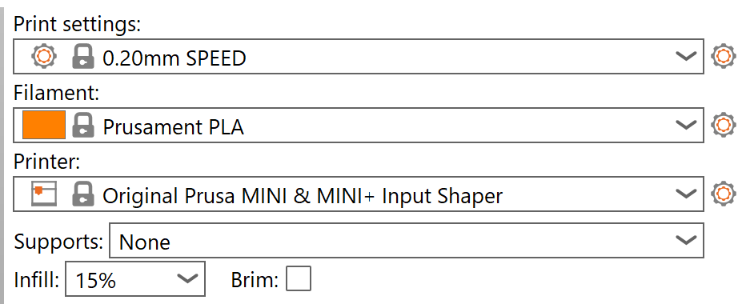

Design Project 3
Instructions
At first glance, the sheer amount of steps was a little intimidating.
I can obviously tell this was made (hence instructions written) in China.
Step 7/9: “The Longer pin is positive pole”
Step 12: “Install … on PCB’s another side”
Step 30: “User need to prepare for themselves”
Admittedly a little nitpicky, but I couldn’t help but notice it.
The steps became a little repetitive, which made them less helpful. For example, the generic descriptions of the steps became monotonous. This would be one thing I’d change about the instruction manual. Perhaps adding some more descriptive words for each part, or even adding a picture of the part.
Soldering
I was in a group of 3 with Sam and Kayla. Sam was much more confident in his soldering skills, so the strategy to divide the work was split exactly in half between me and Kayla. She would build her car one step at a time, and I would follow her. After 6 or 7 steps, we were much slower than the rest of the class and just decided to make our own cars.
The soldering process was, above all else, fun! When I encounter hiccups on my journey this semester (and definitely during this project), I remember why I’m taking this class in the first place: try something new, fun hands-on lab experience, and definitely better than chemistry! That being said, I had at least 3 instances of a total mistake. Whether soldering a piece backwards, soldering a piece on the wrong spot, or snapping a piece, they all represented a >10 minute setback, which wasn’t very enjoyable.

Thanks Kayla for an awesome action shot!
By the end, we all created cars! I was too caught up in making my car work at its best, it seems Kayla’s car was working perfectly. Great for the assignment (having one working car per group); not so great for my intellectual curiosity (why wasn’t my car working!)
Sam pointed out a problem with the connection between the board and a capacitor. He suggested bridging the connection with a piece of wire.
Frankly, I would’ve had no idea I needed to do this, but he guided me through it and it worked. At this point, both red lights were on, and the car was moving.
Next, Prof. Rogers helped me adjust the potentiometers for the sensors, which was very finicky and tedious. Though it wasn’t working perfectly, I think I had to set aside my intellectual curiosity, and work on the first chassis for the (working) car.
Working in Fusion
3D Print
Sam took the lead and created the shared Fusion hub. We first copied the measurements from our basic box, upon which we built the rest of the Mystery Machine. The logo and lettering came from another STL file from Thangs, and we put that on top of the box.
Our first two iterations were a bit narrow for the car to fit. We then realized that we forgot to leave a space for the power button, so we created a fourth and final basic box.
Our Prusa slicer settings were kept default, except adding organic supports for the Mystery Machine, just to be safe.

Our first box with all the measurements!

Iterations

Iterations
Slicer settings
Laser
We created the basic box in Fusion and laid out all the pieces in LightBurn to be cut
Gluing the acrylic was the most tedious part. The glue (for whatever reason) was taking a very long time to dry, and the pieces kept falling apart. It took us 3 attempts, but we fit it on the car.

Gluing!

Gluing 2!